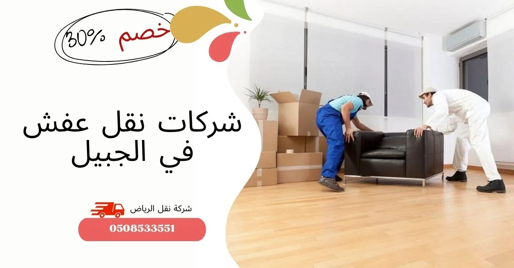

شركات نقل عفش في الجبيل 2025

تعد شركات نقل عفش في الجبيل من الخيارات المثالية للمساعدة في عملية النقل السلسة والآمنة، كما تقدم هذه الشركات خدمات متكاملة تتضمن التعبئة، التحميل، النقل، والتفريغ، مما يضمن أن جميع الأثاث والمواد الثمينة ستصل إلى المكان الجديد بحالة ممتازة، من خلال استخدام أساليب وتقنيات حديثة في النقل، توفر هذه الشركات راحة البال للعملاء وتقلل من مخاطر الأضرار.
شركات نقل عفش في الجبيل
تعتبر شركة نقل الرياض من شركات نقل عفش في الجبيل من الخيارات المثالية، لأهالي المدينة والمناطق المحيطة الذين يحتاجون إلى خدمات نقل ذات جودة عالية، حيث أن هذه الشركات لا تقتصر على توفير النقل فحسب، بل تقدم أيضًا خدمات متكاملة تشمل تعبئة الأثاث باستخدام مواد خاصة لضمان حماية القطع الثمينة، كما أنها تستخدم سيارات نصف نقل لنقل العفش بالرياض مجهزة بأحدث المعدات لضمان النقل السريع والآمن، مع العمالة المدربين على أعلى مستوى توفر هذه الشركات تجربة نقل مريحة وخالية من القلق، تقدم بعض الشركات أيضًا خدمات تخزين الأثاث في حالة الحاجة إلى تأجيل الانتقال من خلال هذه الخدمات المتكاملة، يمكن للعملاء ضمان نقل آمن وفعال في كل خطوة من خطوات عملية الانتقال.
نقل عفش الجبيل حراج
تعد شركات نقل عفش في الجبيل من افضل شركات نقل الاثاث في السعودية من الحراج، حيث تتم للراغبين في الحصول على خدمات نقل بأسعار معقولة، كما يوفر حراج الجبيل قائمة متنوعة من الشركات المتخصصة في نقل الأثاث والتي تقدم خدمات شاملة من التعبئة والتغليف والنقل، بالإضافة إلى ترتيب الأثاث في المنزل الجديد، كما تعد هذه الخدمة مثالية للعملاء الذين يبحثون عن أسعار تنافسية وخدمات موثوقة.
أهمية خدمات نقل العفش من حراج الجبيل
- أسعار تنافسية: توفر شركة نقل الرياض خدمات بأسعار تناسب مختلف الفئات واستشارات مجانية.
- خدمة شاملة: تشمل التعبئة، التغليف، والنقل بطريقة آمنة.
- سرعة الأداء: التزام الشركات بتقديم الخدمة في الوقت المحدد.
نصائح عند اختيار شركة نقل
- التأكد من سمعة الشركة وقراءة التقييمات.
- تأكد من توفير تأمين على الأثاث أثناء النقل.
- التأكد من توفر المعدات اللازمة مثل الشاحنات والعمالة المدربة.
نقل عفش بالخبر
نقل العفش عمالة فلبينية في الخبر يعد من الخدمات الضرورية، التي يحتاجها الكثير من السكان سواء كانوا في عملية الانتقال إلى منزل جديد أو حتى أثناء التجديدات، حيث تقدم العديد من شركات نقل عفش في الجبيل والخبر خدمات متكاملة تبدأ من التعبئة والتغليف للأثاث، مرورًا بتأمين نقله بطريقة آمنة، وصولًا إلى إعادة ترتيب الأثاث في المكان الجديد.
أهمية خدمات شركات نقل عفش في الجبيل والخبر
- الاحترافية والأمان: الشركات توفر عمالة مدربة للتعامل مع الأثاث بعناية.
- توفير الوقت والجهد: تسهم شركات النقل في توفير الوقت والجهد على العملاء، مما يجعل العملية أسهل وأكثر تنظيمًا.
- الأسعار التنافسية: تبدأ من 200 ريال لنقل العفش لتنافس الشركات في الخبر لتمكين العملاء من الحصول على خدمة متميزة بأسعار معقولة.
- تحقق من تجارب العملاء السابقين.
- تأكد من توفير خدمات تأمين الأثاث أثناء النقل.
إذا كنت تريد نقل اثاث منزلك بكل احترافية وامان عليك اختيار الشركات التي توفر معدات نقل متخصصة مثل السيارات المغلقة لضمان سلامة الأثاث.
نقل عفش من الجبيل الى الرياض
تتطلب خدمة شركات نقل عفش في الجبيل إلى الرياض تخطيطًا دقيقًا لضمان سلامة الأثاث، وتقديم الخدمة بسرعة وكفاءة عند اختيار شركة لنقل الأثاث بين المدينتين، من المهم التأكد من قدرتها على التعامل مع الأثاث بشكل احترافي وحمايته من التلف أثناء الرحلة، توفر شركات النقل خدمات تعبئة الأثاث بعناية باستخدام مواد تغليف عالية الجودة، مثل البلاستيك الملفوف والصناديق القوية، لتوفير حماية شاملة.
أهمية نقل العفش من الجبيل إلى الرياض
- الاحترافية في التعامل مع الأثاث: الشركات تستخدم موظفين مدربين ومؤهلين لنقل الأثاث بشكل آمن.
- الأمان والراحة: يتم استخدام سيارات مخصصة وآمنة لنقل الأثاث، مما يقلل من فرص التلف أو الكسر.
- توفير الوقت والجهد: بدلاً من القيام بالنقل شخصيًا، توفر الشركات الوقت والجهد، مما يجعل العملية أسهل وأكثر أمانًا.
نصائح عند نقل العفش من الجبيل إلى الرياض
- تأكد من أن شركة النقل تقدم خدمات التأمين.
- اختر شركة نقل تتمتع بسمعة جيدة في تقديم خدمات آمنة وموثوقة.
- تأكد من التوافر في الوقت المحدد ومتابعة حركة النقل بانتظام.
نقل عفش من الجبيل الى الدمام
يحتاج نقل العفش من الجبيل إلى الدمام التخطيط والتنظيم الدقيق، لضمان سلامة الأثاث أثناء عملية النقل لأن عادةً ما تبدأ العملية بتحديد نوعية الأثاث الذي سيتم نقله، وذلك لأن بعض القطع قد تحتاج إلى معاملة خاصة بسبب حجمها أو حساسيتها، ولذلك عند اختيار شركة لنقل العفش يجب التأكد من أنها تقدم خدمات احترافية تشمل تعبئة الأثاث باستخدام مواد تغليف عالية الجودة مثل الفقاعات الهوائية والورق المقوى، بالإضافة إلى توفير تغليف خاص للأثاث القيم مثل الزجاج والمرايا.
يتم تحديد نوع وسيلة النقل بحسب حجم العفش، حيث تستخدم سيارات مجهزة خصيصًا لضمان ثبات الأثاث داخل المركبة وعدم تعرضه لأي ضرر أثناء الرحلة، فـ من ضمن الخدمات المهمة التي تقدمها الشركات الموثوقة هي فك وتركيب الأثاث في المكان الجديد، بالإضافة إلى توفير التأمين على الأثاث أثناء النقل لمزيد من الطمأنينة.
توفر الشركات المتخصصة في نقل العفش أيضًا خيارات مرنة من حيث تحديد مواعيد النقل، بما يتيح للعملاء تحديد الوقت الأنسب لهم لإتمام عملية النقل دون التسبب بأي إزعاج، وفي حال كان هناك حاجة لنقل الأثاث في أوقات غير تقليدية، تقوم الشركات بتوفير فرق عمل تعمل ليلاً أو في عطلات نهاية الأسبوع.
تواصل الأن مع شركة نقل الرياض لخدمات نقل العفش وكافة الخدمات المنزلية
شركة نقل عفش بالاحساء
تعتبر شركة نقل عفش في الأحساء من الشركات الرائدة في مجال نقل الأثاث، حيث توفر خدمات متميزة تناسب كافة احتياجات العملاء، حيث تتميز الشركة بتقديم حلول مرنة كما يتم تحديد مواعيد النقل بما يتناسب مع راحة العميل، بالإضافة إلى أن الشركة تعتمد على فريق عمل مدرب ومحترف في جميع جوانب النقل، من التعبئة والتغليف إلى التفريغ والتركيب في المكان الجديد.
تستخدم الشركة أحدث التقنيات في تعبئة الأثاث، مثل التغليف باستخدام مواد حماية متطورة لحماية الأثاث من الخدوش أو التلف أثناء النقل، كما توفر سيارات مجهزة بمواصفات عالية لضمان نقل الأثاث بأمان.
بالإضافة إلى ذلك، تقدم الشركة خدمات نقل عفش بأسعار تنافسية مع تقديم عروض وخصومات في بعض الأحيان، وتعتمد الشركة على تأمين الأثاث أثناء عملية النقل لضمان حماية الممتلكات وبفضل خبرتها الطويلة، تضمن الشركة وصول الأثاث إلى المكان الجديد دون أي مشاكل، مما يجعلها الخيار الأمثل للعملاء في الأحساء.
الأسئلة الشائعة حول شركات نقل عفش في الجبيل
ما هي تكلفة شركات نقل عفش في الجبيل؟
تعتمد تكلفة شركات نقل عفش في الجبيل على حجم الأثاث والمسافة بين الوجهتين، لكن العديد من الشركات تقدم خصومات وعروضًا لجعل الخدمة أكثر تنافسية.
هل توفر شركات النقل خدمة التعبئة والتغليف؟
نعم، تقدم معظم شركات النقل في الجبيل خدمة التعبئة والتغليف الاحترافية لحماية الأثاث أثناء النقل.
في الختام باختيارك لأفضل شركات نقل عفش في الجبيل، يمكنك ضمان عملية نقل آمنة وسهلة بعيدًا عن القلق أو التوتر، مع توفير الأساليب الحديثة والموظفين المدربين، ستتمكن من الاستمتاع بتجربة نقل منظمة وفعالة، اختر دائمًا الشركات التي تتمتع بسمعة قوية لتضمن راحة بالك وسلامة ممتلكاتك، بالإضافة إلى ذلك يمكن للعروض والخصومات التي تقدمها هذه الشركات أن تكون فرصة لتوفير الوقت والمال أثناء الانتقال.